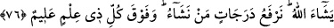

BÜNYAMİN’İN MISIR’DA
ALIKONMASI
76. Bunun üzerine Yûsuf, kardeşinin yükünden önce onların yüklerini (aramaya)
başladı. Sonra da onu, kardeşinin yükünden çıkarttı. İşte biz Yûsuf’a böyle bir
tedbir öğrettik, yoksa kralın kanununa göre kardeşini alıkoyamayacaktı. Ancak
Allah’ın dilemesi hariç. Biz kimi dilersek derecelerle yükseltiriz. Her ilim sahibinin
üstünde daha iyi bilen birisi vardır.
77. (Kardeşleri) dediler ki: “Eğer o çaldıysa, daha önce onun kardeşi de çalmıştı.”
Yûsuf bunu içinde sakladı, onlara açmadı. (Kendi kendine) dedi ki: “Siz daha kötü
durumdasınız! Allah, sizin anlattığınızı çok iyi bilir.”
78. Dediler ki: “Ey aziz! Gerçekten onun çok yaşlı bir babası var. Onun yerine
bizim birimizi alıkoy. Zira biz seni, iyilik edenlerden görüyoruz.”
79. Dedi ki: “Eşyamızı yanında bulduğumuz kimseden başkasını alıkoymaktan
Allah’a sığınırız. O takdirde biz gerçekten zâlimler oluruz!”
“Bunun üzerine Yûsuf,” yüklerinin aranması için kendisine gelmelerini müteakip
“kardeşinin” Bünyamin’in “yükünden önce” yani onu arayıp taramadan önce, töhmet
altında kalmamak için işe “onların” öteki on kardeşinin “yüklerini” aramakla
“başladı.”
Rivâyete göre Yûsuf (a.s.)’ın adamları onlara “Develerinizi çöktürün, yükünüzü
arayacağız” deyince suçsuz olduklarından emin bir şekilde develerini çöktürdüler.
Adamlar işe en büyüklerinden başlayıp hepsinin yükünü sırayla teker teker aradıktan
sonra, arama sırası Bünyamin’e gelince Yûsuf (a.s.): “Bunun bir şey almış olacağını